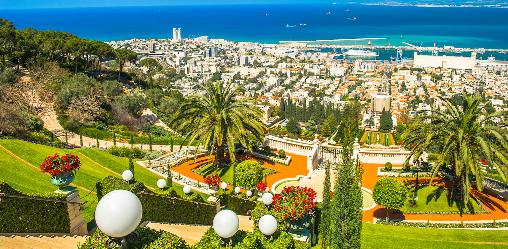

|  |
קצת על חיפהחיפה היא אחת הערים המיוחדות והמגוונות בישראל, והיא משלבת בין טבע, תרבות, נופים ומרכזי בילוי למרות גודלה הצנוע יחסית, היא מציעה כל כך הרבה אטרקציות, שלא בטוח שיום אחד יספיק כדי לראות את כולן העיר מתפרסת מהים ועד ההר, ולכן מציעה שילוב נדיר של חופים יפיפיים, טיילות, שכונות היסטוריות, ונוף מרהיב שנגלה מכל נקודה בעיר. חיפה שוכנת על הר הכרמל שמלא בנקודות תצפית ירוקות ומסלולי הליכה, מעבר לכך ישנה גם את העיר התחתית של חיפה שהתחדשה בשנים האחרונות והפכה לאזור שוקק עם מסעדות, ברים ואמנות רחוב אחד הדברים המיוחדים בחיפה הוא שהיא בין הערים היחידות בעולם שבהן קיימים כמעט כל אמצעי התחבורה העירוניים המוכרים: רכבת, מטרונית , רכבל, קווי אוטובוס, רכבת תחתית (הכרמלית), שדה תעופה ורכבת עילית מה שהופך את ההתניידות בה לקלה יותר על אף שהיא שוכנת על הר בשורה התחתונה, חיפה משלבת טבע, עירוניות ונופים מרשימים בצורה שקשה למצוא במקומות אחרים |